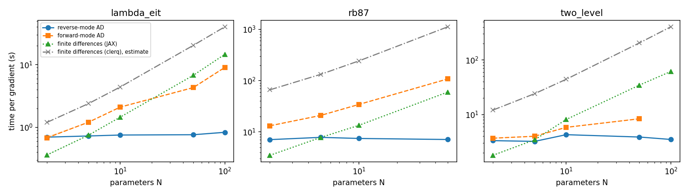
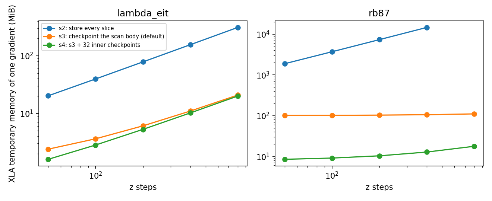
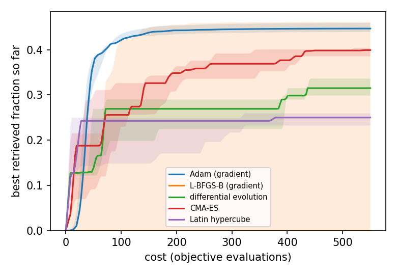

Autodiff performance and validation
Requires the jax extra: pip install 'clerq[jax]'. See AutodiffPropagation for the API.
This page records measurements of the released clerq.autodiff (0.14.0): what a gradient costs, how much memory it needs, how accurate it is, and what it buys on a design problem. The harness that produced every number is in benchmarks/autodiff/ (with the raw results in benchmarks/autodiff/results/), so they can be reproduced and rerun on other hardware.
All timings are on one Apple M1 Max (10 cores, 64 GB, macOS 26.6.2) on AC power, CPU only, Python 3.14.4, JAX 0.11.2, diffrax 0.7.2. Other applications were running, so the one-minute load average was 2 to 8 (median 3 to 5) during the runs; the runs of different methods are interleaved so that drift affects them alike. The cost cells are the median of 7 repeats after warm-up (5 in the before-and-after comparison, 3 for the slowest), with a bootstrap 95% interval of the median in the harness output; the memory and compile-time cells are the best of two or three calls in a fresh process. No GPU was used, and the ratios (gradient cost over forward cost, autodiff over finite differences) are the portable part; absolute seconds are not.
The cost of a gradient
A reverse-mode gradient costs about six forward propagations, whatever the number of parameters. The parameters here are the coefficients of a free-form probe control (a Gaussian basis, see clerq.autodiff.controls), so N can be varied freely.

| system | forward (s) | reverse (s) | reverse / forward | at N = 50: forward-mode (s) | finite differences, JAX (s) | finite differences, clerq (s, estimated) | reverse speed-up over JAX / clerq |
|---|---|---|---|---|---|---|---|
| two-level, 1001 × 200 | 0.68 | 3.9 | 5.7 | 8.4 | 34.6 | 205 | 8.9x / 53x |
| lambda, 3 levels, 201 × 60 | 0.13 | 0.76 | 5.8 | 4.3 | 6.8 | 20.4 | 8.9x / 27x |
| Rb87, 11 levels, 11 classes, 201 × 50 | 1.18 | 7.1 | 6.0 | 108 | 60 | 1130 | 8.4x / 158x |
At N = 100 (two-level and lambda) the speed-up over finite differences through JAX is 17.7x and 17.6x, and over clerq 116x and 48x.
- What the finite differences are. Forward differences,
N + 1evaluations, through the compiled propagation. Central differences cost twice as much, which doubles every speed-up here. The finite differences through clerq are an estimate:N + 1times the measured time of onePropagationSolver.solve()(4.0 s, 0.40 s and 22 s for the three systems), not a measurement of that many solves. - When reverse mode wins. It costs the same as finite differences through JAX at about
N = 5, and is faster fromN = 10(1.8x to 1.9x on all three systems). - Forward mode (
mode="forward") was never faster than reverse mode: equal atN = 2on the lambda system and slower elsewhere (for example 13 s against 7 s for Rb87 atN = 2), and its cost grows withN. It was skipped for the two-level system atN = 100, where it would have taken over two minutes. - First call. The first call includes compilation: a forward propagation takes 1.4 to 2.4 s the first time and the reverse-mode gradient 5.5 to 12 s, against steady-state times of 0.13 to 1.2 s and 0.74 to 7.5 s. A new array shape or loss function recompiles, so pass the same loss object between calls.
Memory
Plain reverse mode through the z scan (strategy s2) stores every slice, so its memory grows with the number of z steps and of velocity classes. The default (s3) recomputes a slice on the backward pass and s4 also limits the solver’s inner checkpoints (here to 32). The figure shows the temporary memory XLA reports for one compiled gradient.

For Rb87 with 11 classes and 400 z steps, s2 needs 14.3 GiB, s3 105 MiB and s4 13 MiB; at 800 z steps s3 needs 110 MiB and s4 18 MiB (s2 was not run). For lambda at 800 steps it is 312 MiB, 21 MiB and 20 MiB. Against the number of classes (Rb87, 100 z steps, 1, 11 and 25 classes): s2 347, 3698 and 8391 MiB; s3 11, 102 and 229 MiB; s4 2, 9 and 19 MiB. Checkpointing costs time: the steady-state gradient is about 20% slower with s3 than with s2 and 26% to 39% slower with s4 (Rb87, 100 z steps, 11 classes: 15.0 and 15.8 s against 12.5 s; lambda at 100 z steps: 1.28 and 1.46 s against 1.05 s).
The peak resident set of the process also includes JAX and compilation, about 380 to 600 MiB above the baseline for s3 and s4 whatever the problem, so the XLA figures are the ones that separate the strategies.
Accuracy
| system | N | fixed steps | field error against solve() |
AD against finite differences | forward against reverse | adaptive against fixed-step AD |
|---|---|---|---|---|---|---|
| two-level | 10 | 2003 | 2.5e-4 | 8.0e-9 | 8.5e-14 | 2.5e-5 |
| lambda | 10 | 2003 | 8.9e-8 | 2.3e-12 | 1.1e-16 | 1.9e-7 |
| Rb87, 11 classes | 6 | 1009 | 3.6e-4 | 5.4e-13 | 6.5e-16 | 4.8e-8 |
(The Rb87 case is smaller than the others because a fixed-step reference with 11 classes is slow.)
- The gradient is the exact gradient of the discretised problem: it agrees with central finite differences on a fixed-step solve to 8e-9 or better (best of four step sizes: the two-level problem needs steps of 1e-7 or smaller because its loss is very nonlinear), and forward and reverse mode agree to 1e-13 or better.
- The propagated field agrees with
solve()to 2.5e-4 of the peak for the two-level problem and 3.6e-4 for Rb87 at the grids used here, and to 9e-8 for the lambda problem. We did not isolate the cause of the two larger differences, and the error did not fall steadily when the time grid was refined for the two-level problem.
A design problem
The memory problem in the research notes: store a probe pulse in a Doppler-broadened lambda medium (11 classes, effective optical depth about 25) with the coupling field off, and maximise the energy retrieved afterwards. A 5-parameter baseline (a super-Gaussian probe and two coupling amplitudes) searched with Nelder-Mead is compared with a free-form design of 44 coefficients by gradient descent (Adam).
- A 44-parameter gradient took 36 s with reverse mode against 279 s with forward differences (one forward evaluation takes 6.2 s).
- The baseline reached 0.068 retrieved after 296 evaluations and 2261 s.
- The free-form design passed that value at step 23, after 1037 s, and reached 0.106 after 40 steps (1809 s). With finite-difference gradients the same 23 steps would take about 6400 s (an estimate from the measured gradient time).
This run was slower than earlier runs of the same problem on the same machine (a forward evaluation took 3.2 s in earlier runs); we did not identify why. The ratios are within a run. It is one problem, one optical depth and one Doppler width. Without Doppler broadening a tuned three-parameter baseline matched the free-form result in the research notes (0.469 against 0.460), so this advantage should not be assumed for other problems.
Against gradient-free search at equal cost
A gradient is expensive to compute (about six forward evaluations), so the fair question is whether a search that uses it beats a gradient-free one given the same total cost. The same design problem without Doppler classes (optical depth 25, 44 parameters, benchmarks/autodiff/e7_equal_cost.py) was given a budget of 550 objective evaluations, 12.5 per parameter, with a gradient call charged at the measured 6.5 evaluations. Three random starts each; the retrieved fraction at the end of the budget:
| optimiser | per seed | median |
|---|---|---|
| Adam, exact gradients | 0.459, 0.439, 0.447 | 0.447 |
| L-BFGS-B, exact gradients | 0.000, 0.462, 0.000 | 0.000 |
| CMA-ES | 0.399, 0.385, 0.404 | 0.399 |
| differential evolution | 0.315, 0.336, 0.299 | 0.315 |
| Latin hypercube | 0.250, 0.259, 0.232 | 0.250 |

- At equal cost the gradient search with Adam finished 12% above CMA-ES, the best gradient-free search, and 42% above differential evolution, on all three seeds. The margin over CMA-ES is modest. On the first seed Adam had reached 99.5% of its final value by half the budget, while CMA-ES and differential evolution had flattened by 80% of it.
- L-BFGS-B found the best single control (0.462), but stopped after the first gradient call on two of the three seeds: the random starts retrieve only 3e-9 to 4e-8, and on those two the largest gradient component (5e-6 and 4e-6) is below L-BFGS-B’s default stopping threshold of 1e-5. Gradient methods need a start that retrieves something, or a method that does not stop on a tiny gradient (Adam does not).
- This is one problem, 3 seeds and one budget (12.5 per parameter); neither CMA-ES nor differential evolution was tuned, so a tuned gradient-free search or a much larger budget might narrow the gap. A comparison by Lee (Zenodo 10.5281/zenodo.23407812, appendix) on a different memory problem found gradient search with L-BFGS-B below differential evolution at 16 and 32 control knots at a similar budget, with runs stopping at local optima, so the gradient’s advantage should not be assumed to carry over.
- Wall times of these runs are not reported: other jobs shared the machine.
Cost of the decay-rate parameters
Adding decay_rates (pull request 361) changed how the decays enter the solver. Running the same cost tests on the commit before it and the commit after it, back to back: reverse mode took 1.00 to 1.01 times as long, a forward propagation 1.00 to 1.02 times, and forward mode 1.00 to 1.08 times (the largest at the two-level and lambda systems with N = 10). The two runs were sequential, so slow drift cannot be excluded.
Practical notes
- Validate against fixed-step finite differences. Finite differences through an adaptive solver are noise-limited (error floors near
rtol / h), so a gradient check against them can disagree by orders of magnitude when the gradient is right. Usen_steps=with a step count that does not divide the output grid, and compare at several step sizes. - Avoid commensurate fixed steps. With diffrax 0.7, fixed steps that land exactly on output times can give wrong reverse-mode gradients. clerq raises an error for this case.
- Resolve the z march. An insufficiently fine
z_steps_innerat high optical depth makes the march unstable and the energies meaningless; this is a property of the propagation scheme, not of autodiff. - Free-form controls need a smooth parametrisation. One free value per time sample lets an optimiser exploit the time grid (see
clerq.autodiff.controls).
Not yet established
GPU performance; counter-propagating fields; dense (non-single-element) dissipators at scale; stiff regimes; systems of more than 11 levels; the largest cells (nine levels with 50 velocity classes, and s2 at 800 z steps for Rb87), which were not run; and any finite-difference timing through clerq beyond the one-solve estimate.